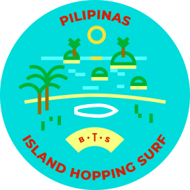

After several stopovers and a propeller plane ride, you’ll arrive in a paradise often described as Bali 30 years ago but not yet been discovered by tourist hordes, nor by international hotel chains.
Sed ut perspiciatis unde omnis iste natus error sit voluptatem accusantium doloremque laudantium
Siargao is a completely different world to South East Asia’s usual hotspots. The environment, the pace of life, and the people create a truly idyllic setting. You’ll find the locals are smiling and kind, and they speak good English. Unlike many other tourist destinations, there are no “tourist prices” here. The locals are very environmentally conscious as they know the natural environment is their most important treasure. Plastic waste and plastic bottles are not common here, straws were banned way before Europe has even started the discussions about the idea.
Within moments of arriving, you’ll get in the flow of this way of life, where everyone gets around by habal-habal (a type of motorbike with a roof that’s kind of like a tuk-tuk) on the roads and by traditional boat between the islands. You’ll even take a boat when zipping between the best beaches and surf spots.
One of the highlights of the trip is heading to the local market to buy all kinds of fresh fish, seafood, fruit and veg. We’ll then take our haul over to a breathtakingly beautiful island where a local family will cook a delicious traditional meal for us that we’ll enjoy on a white sandy beach.
The island is surrounded by world class reefs and turquoise water. For those wanting the ultimate Siargao experience, it’s worth taking the board out. All beginners get their own personal instructor because surfing on reef-breaks can be dangerous for newbies. By the end of the trip, your surfing will improve more than you’ve ever imagined, and you’ll definitely form a close bond with your instructor too. For experienced surfers, the world-famous Cloud 9 surf spot is at Siargao, and with any luck you’ll be able to surf its perfect tubes.
We planned the itinerary so that those who don’t want to surf also have a magical time. We will visit lagoons by boat, climb caves, canoe in a jungle and of course sunbathe on the beach.
The locals love to party, and there’s always a mix of surfers and locals enjoying themselves at one of the island parties. In fact, a party is held on a different venue each night, sometimes even offshore on a tiny island, so we’ll head there by boat. Did you know that rum is cheaper than cola on Siargao? Yep, that’s right. Ordering a double rum and coke will be cheaper than ordering just a coke. Not to talk about triple rum-cokes. Still you’ll want to keep track of your drinks so that you’re ready to head out surfing early the next morning!
After spending 10 days in paradise you will fell in love with Siargao so deeply, that you’ll want to hide this amazing destination from others to keep it unspoiled as it is now.
Sed ut perspiciatis unde omnis iste natus error sit voluptatem accusantium doloremque laudantium